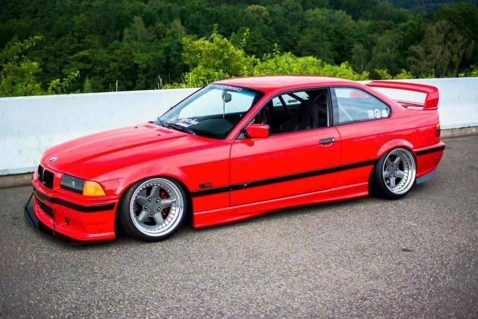
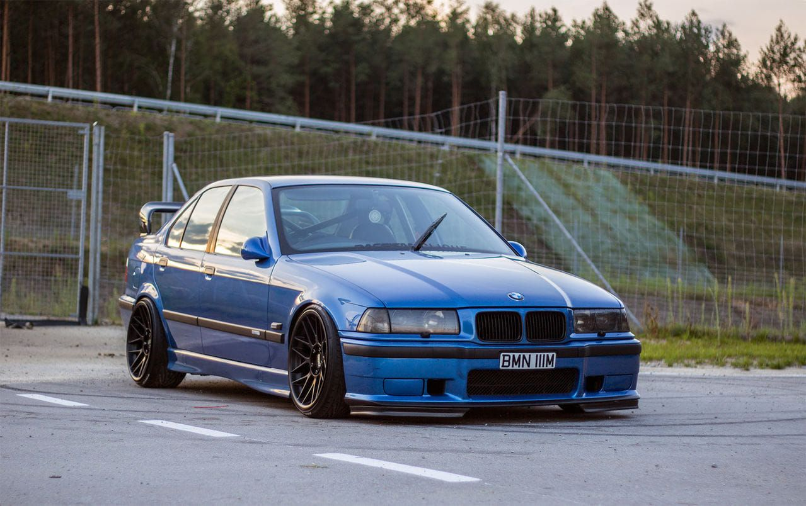
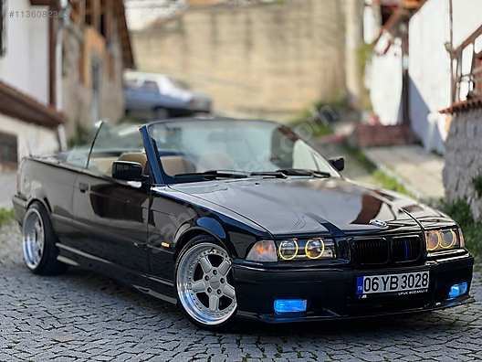
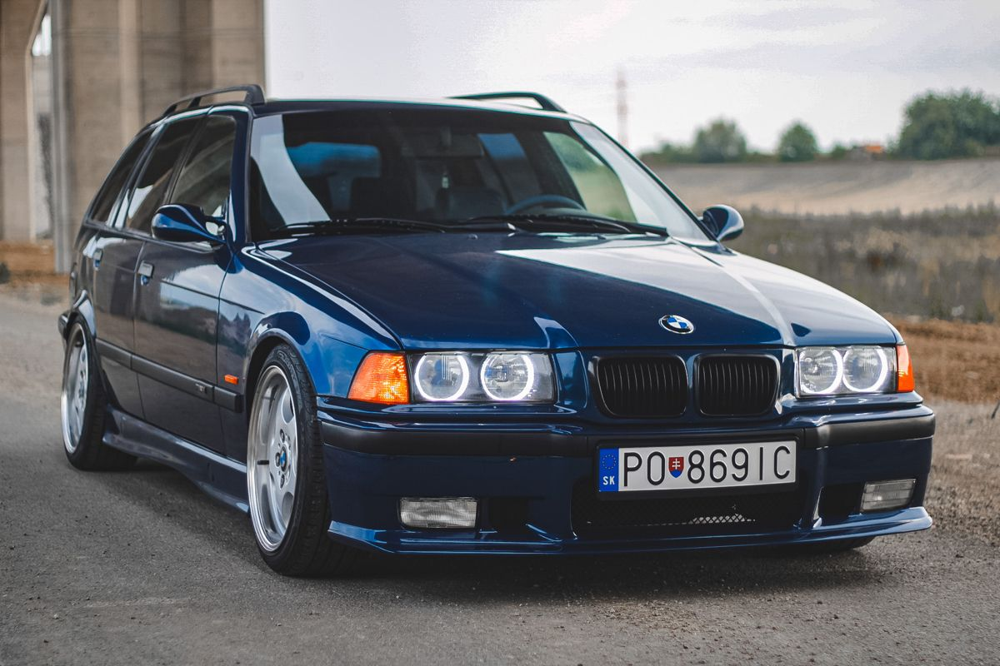

M50B20 (206S1) Engine
The BMW M50 is a straight-6 DOHC petrol engine which was produced from 1990 to 1996. It was released in the E34 520i and 525i, to replace the M20 engine.
In September 1992, the M50 was upgraded to the M50TU ("technical update"), which was BMW's first engine to use variable valve timing. Called single VANOS by BMW, the system adjusted the phasing of the intake camshaft.
For the full specs of the engine
More info about the chassis: The body styles of the range are: 4-door sedan, produced from 1990 to 1998. 2-door coupé, produced from 1990 to 1999. 2-door convertible, produced from 1993 to 1999. A 4-door Baur "Top Cabriolet" conversion was also available. 5-door wagon (marketed as "Touring"), produced from November 1994 to 1999. 105,606 examples were built.[11] 3-door hatchback (see BMW 3 Series Compact), produced from 1994 to 2000.
   Thank you for your visit !!!